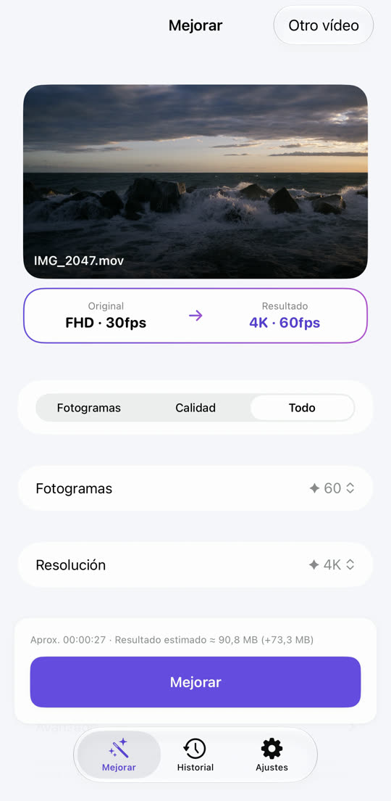
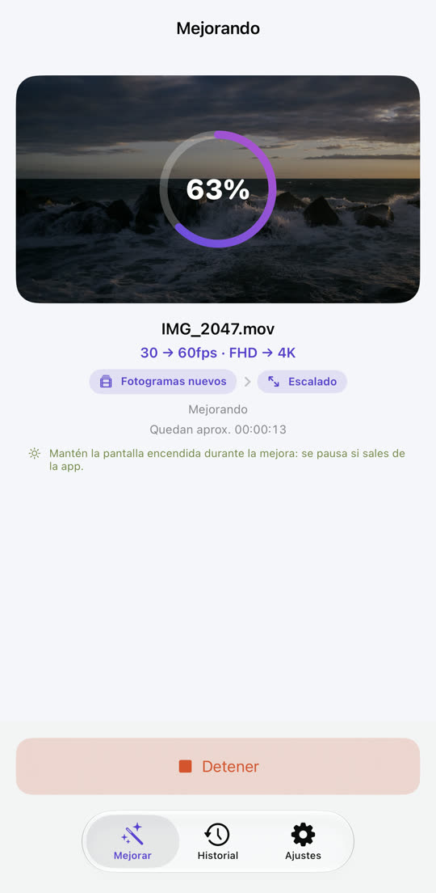
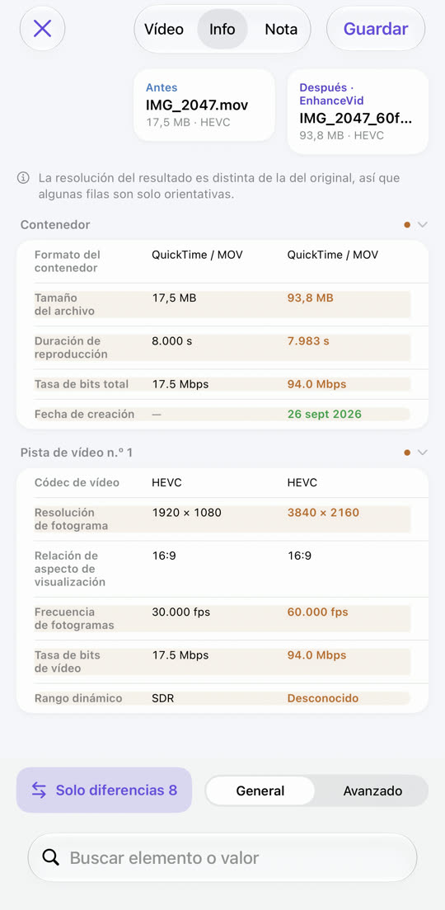
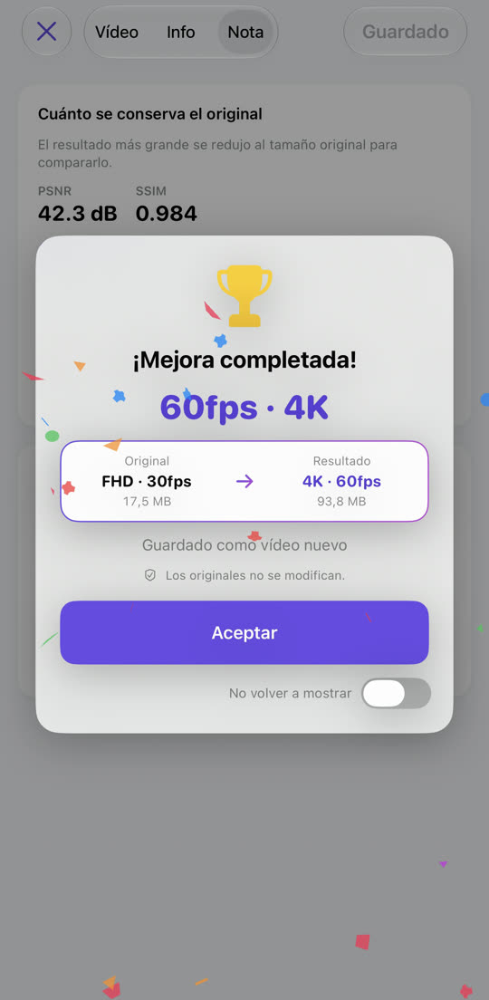

Vídeo a saltos, ahora fluido.
Vídeo borroso, ahora nítido.
De 30 a 60 fps, de Full HD a 4K. EnhanceVid calcula fotogramas nuevos entre los que grabaste y sube la resolución para más detalle. Todo ocurre en tu iPhone y el resultado se guarda como vídeo nuevo junto al original, que no se toca.
Descargar en el App StoreGratis · iOS 26 o posterior · iPhone · iPad · Mac con chip de Apple

Menos borroso, más detalle.
La resolución se sube con el escalado de Apple MetalFX. Arrastra la línea para comparar.

 OriginalMejorado
OriginalMejorado
Imagen de ejemplo: un original de baja resolución ampliado, junto a la versión mejorada.
Movimiento a saltos, ahora suave.
Se calculan fotogramas nuevos entre los originales. Los cambios de escena nunca se mezclan, así que no hay imágenes fantasma.
El movimiento está exagerado para que se note la diferencia.
Elige, empieza, compara y guarda.



Todo lo que necesitas, incluido.
Limpia los vídeos con grano grabados con poca luz. En dispositivos compatibles.
4K 60 fps a 30 fps, 4K a Full HD: también puedes bajar.
Reproducción lado a lado, tabla de datos y puntuación de calidad (PSNR, SSIM y VMAF opcional).
Los vídeos HDR y Dolby Vision grabados con el iPhone siguen siendo HDR.
Vídeos de Fotos y de la app Archivos, incluidos MKV, WebM y AVI.
El resultado se guarda como vídeo nuevo. El original nunca se modifica ni se borra.
No se sube nada y no hace falta cuenta. Gratis, con anuncios — Privacidad